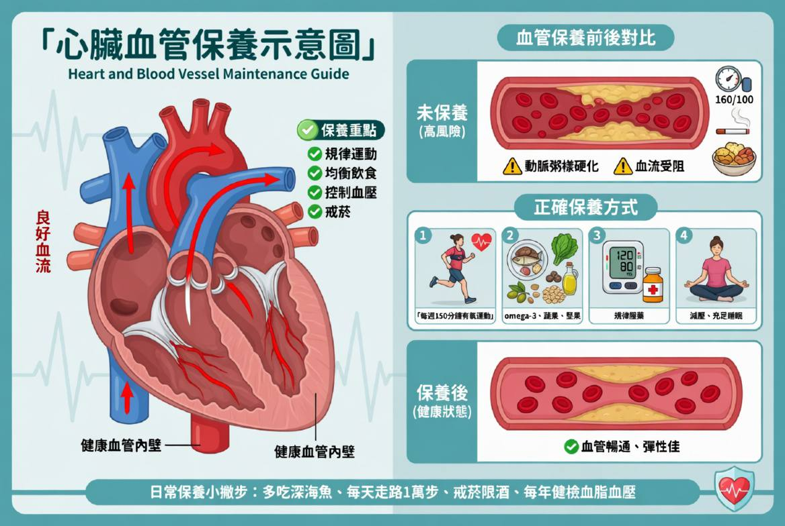

專注整合輔助醫學，提供先進療法，守護您的健康
採用分子矯正醫學原理，精準補充高濃度維生素、礦物質、抗氧化劑與胺基酸，直接注入血液循環系統。
透過體外反搏裝置，增加冠狀動脈血流，改善心臟功能，促進全身血液循環。
透過特定頻率磁場共振，調節細胞電位，促進組織修復，緩解疼痛與發炎症狀。
運用低能量氦氖雷射(ILIB)照射靜脈血液，激活紅血球攜氧能力，改善微循環，降低血液黏稠度。
氫分子具有強大抗氧化能力，清除有害自由基，減輕發炎反應，保護細胞免受損傷。
個人化健康評估與風險管理，提供全方位預防策略，遠離慢性疾病與長照需求。

宜蘭地區首家由心臟血管內科權威醫師創立的整合輔助醫學診所，使命是「健康不進頤養家」。
施奕仲院長擁有臺北醫學大學醫學士與國立臺北大學企管碩士雙重背景，是國內少數同時具備臨床醫學與企業管理專業的醫學專家。曾任聯安預防醫學機構心臟血管內科主任、臺北市立聯合醫院心臟血管內科主治醫師。
診所專注於整合輔助醫學與先進療法，結合心臟血管疾病防治經驗與現代先進整合輔助醫學技術。不只治療疾病，更重視全面的健康管理。
由心臟血管內科權威醫師領軍，結合整合輔助醫學專家團隊
引進國際認證的整合輔助醫學設備，提供精準健康管理
量身打造預防計畫，全程追蹤管理您的健康狀態
從風險評估到預防介入，全方位守護您的健康
由心臟血管內科權威施奕仲院長領導的專業醫療團隊

心臟血管內科權威醫師 / 整合輔助醫學專家
預約諮詢或了解更多服務資訊